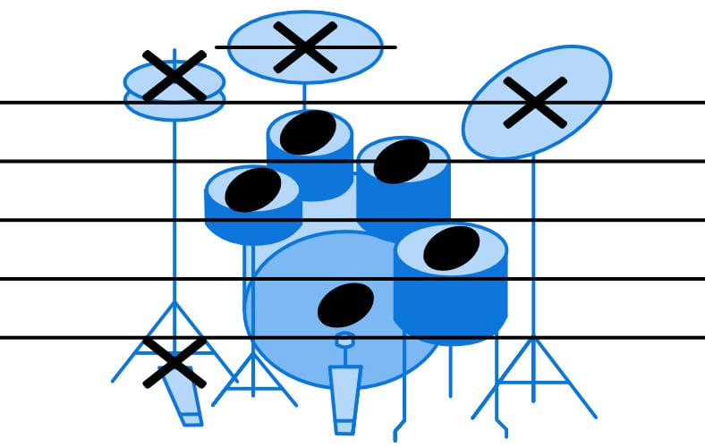
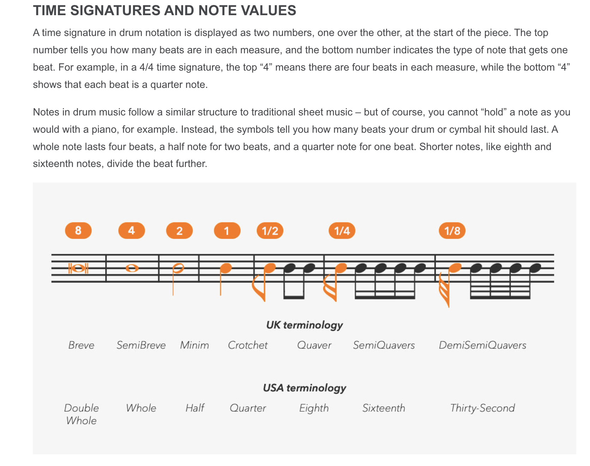
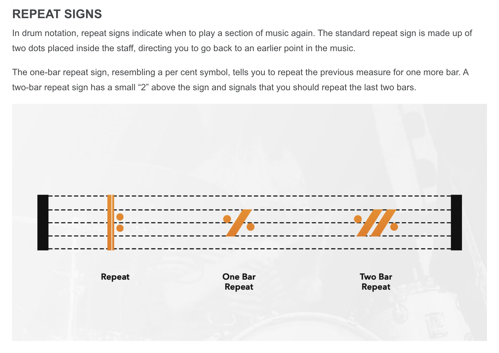
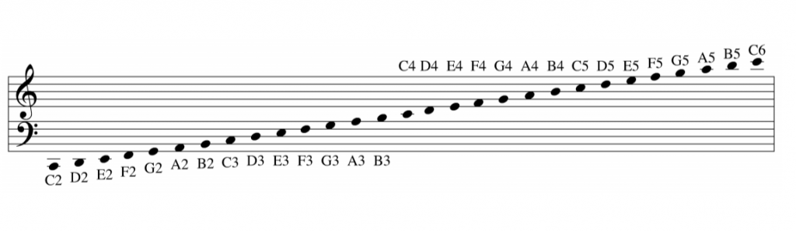

How to Read Drum Notation¶
Drum notation is a variation of standard musical notation. Instead of pitch (C, D, E), the vertical position on the staff represents a specific part of the drum kit (Snare, Kick, Hi-Hat).
The Drum Key¶
The “Legend” or “Key” tells you which drum corresponds to which note. While there are standards, they can vary slightly between publishers.
Basic Notation Key:
 Source: School of Rock - Drum Notation for Beginners
Source: School of Rock - Drum Notation for Beginners
Full Kit Visualisation:

Source: Drumeo - How to Read Drum MusicThe Staff & Symbols¶
DrumScript uses a standard 5-line staff.
Drums (Shells): Represented by standard round note heads (●).
Cymbals: Represented by “X” note heads (x).
Staff Layout:  Source: Gear4music - How to Read Drum Music Notation
Just like other instruments, rhythm is denoted by the note duration (Whole, Quarter, Eighth, Sixteenth).
Rhythmic Values:

Source: Gear4music - How to Read Drum Music NotationRepeats and Structure¶
To save space, drum music often uses repeat signs.
% (One Bar Repeat): Play the previous measure again.
Two Dots (||: :||): Repeat the enclosed section.
Repeat Signs Guide:

Source: Gear4music - How to Read Drum Music NotationNotating Pitch¶

Source: Fundamentals of Music Theory (an Introduction)